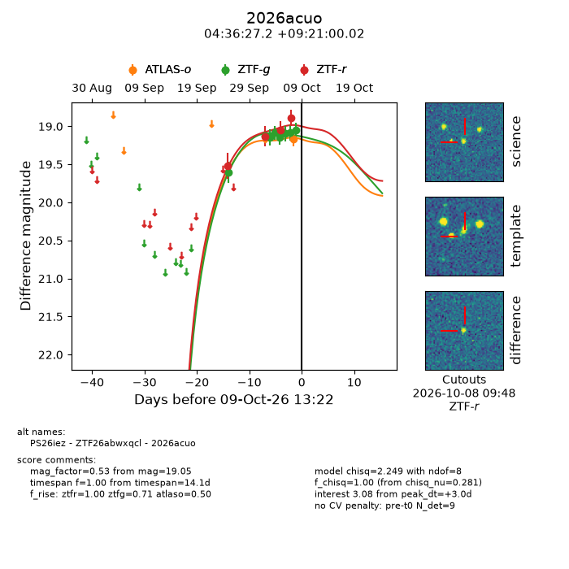
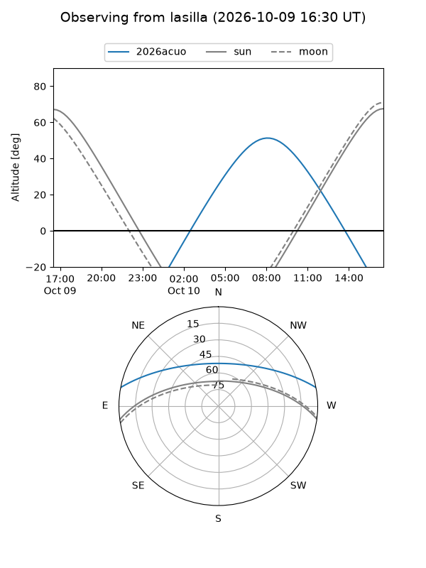
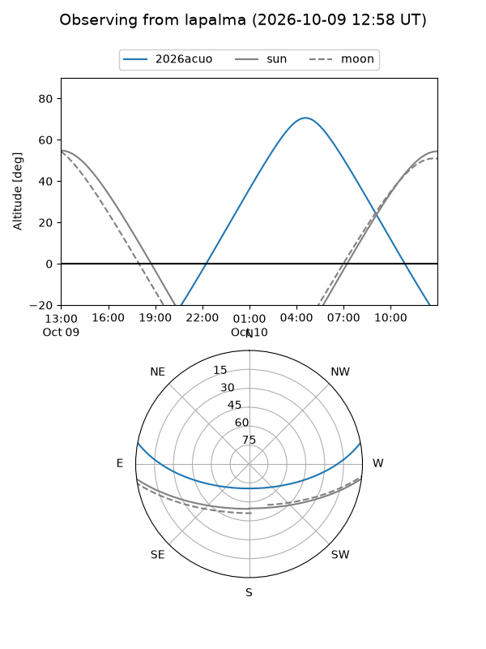
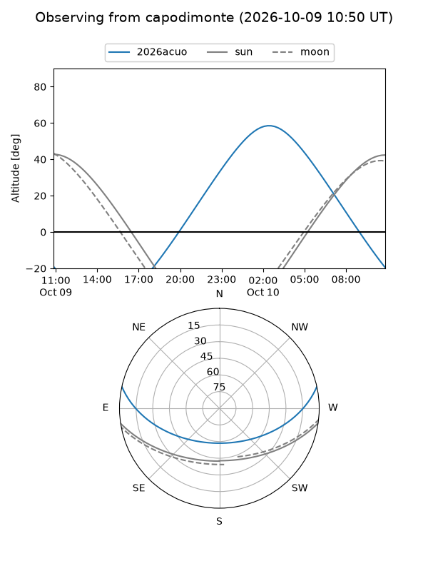
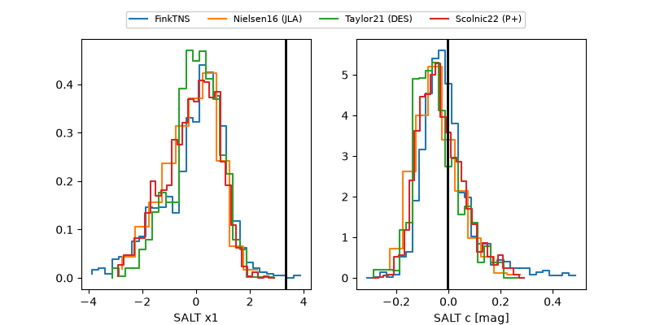

2026acuo
Target 2026acuo at 2026-10-09 13:25
Aliases and brokers:
FINK-ZTF: ztf.fink-portal.org/ZTF26abwxqcl
Lasair-ZTF: lasair-ztf.lsst.ac.uk/objects/ZTF26abwxqcl
ALeRCE-ZTF: alerce.online/object/ZTF26abwxqcl
YSE-PZ: ziggy.ucolick.org/yse/transient_detail/2026acuo
TNS name: wis-tns.org/object/2026acuo
Direct TNS query: direct search
alt names
ZTF26abwxqcl (ztf,fink_ztf)
2026acuo (tns,yse)
PS26iez (panstarrs)
Coordinates:
equatorial (ra, dec) = 69.1132,+9.35001
equatorial (HMS+DMS) = 04:36:27.16,+09:21:00.02
galactic (l, b) = (187.2505,-24.44082)
Flags:
peak dt: +3.0
Photometry:
last atlaso=19.17, ztfg=19.05, ztfr=18.89
1 atlaso, 8 ztfg, 4 ztfr detections
Lightcurve

Visibility



Additional plots
